12 Multilevel Models
Multilevel models… remember features of each cluster in the data as they learn about all of the clusters. Depending upon the variation among clusters, which is learned from the data as well, the model pools information across clusters. This pooling tends to improve estimates about each cluster. This improved estimation leads to several, more pragmatic sounding, benefits of the multilevel approach. (p. 356)
These benefits include:
- improved estimates for repeated sampling (i.e., in longitudinal data)
- improved estimates when there are imbalances among subsamples
- estimates of the variation across subsamples
- avoiding simplistic averaging by retaining variation across subsamples
All of these benefits flow out of the same strategy and model structure. You learn one basic design and you get all of this for free.
When it comes to regression, multilevel regression deserves to be the default approach. There are certainly contexts in which it would be better to use an old-fashioned single-level model. But the contexts in which multilevel models are superior are much more numerous. It is better to begin to build a multilevel analysis, and then realize it’s unnecessary, than to overlook it. And once you grasp the basic multilevel stragety, it becomes much easier to incorporate related tricks such as allowing for measurement error in the data and even model missing data itself (Chapter 14). (p. 356)
I’m totally on board with this. After learning about the multilevel model, I see it everywhere. For more on the sentiment it should be the default, check out McElreath’s blog post, Multilevel Regression as Default.
12.1 Example: Multilevel tadpoles
Let’s get the reedfrogs data from rethinking.
library(rethinking)
data(reedfrogs)
d <- reedfrogsDetach rethinking and load brms.
rm(reedfrogs)
detach(package:rethinking, unload = T)
library(brms)Go ahead and acquaint yourself with the reedfrogs.
library(tidyverse)
d %>%
glimpse()## Observations: 48
## Variables: 5
## $ density <int> 10, 10, 10, 10, 10, 10, 10, 10, 10, 10, 10, 10, 10, 10, 10, 10, 25, 25, 25, 25, 25, 25, ...
## $ pred <fct> no, no, no, no, no, no, no, no, pred, pred, pred, pred, pred, pred, pred, pred, no, no, ...
## $ size <fct> big, big, big, big, small, small, small, small, big, big, big, big, small, small, small,...
## $ surv <int> 9, 10, 7, 10, 9, 9, 10, 9, 4, 9, 7, 6, 7, 5, 9, 9, 24, 23, 22, 25, 23, 23, 23, 21, 6, 13...
## $ propsurv <dbl> 0.9000000, 1.0000000, 0.7000000, 1.0000000, 0.9000000, 0.9000000, 1.0000000, 0.9000000, ...Making the tank cluster variable is easy.
d <-
d %>%
mutate(tank = 1:nrow(d))Here’s the formula for the un-pooled model in which each tank gets its own intercept.
\[ \begin{eqnarray} \text{surv}_i & \sim & \text{Binomial} (n_i, p_i) \\ \text{logit} (p_i) & = & \alpha_{\text{tank}_i} \\ \alpha_{\text{tank}} & \sim & \text{Normal} (0, 5) \end{eqnarray} \]
And \(n_i = \text{density}_i\). Now we’ll fit this simple aggregated binomial model much like we practiced in Chapter 10.
b12.1 <-
brm(data = d, family = binomial,
surv | trials(density) ~ 0 + factor(tank),
prior(normal(0, 5), class = b),
iter = 2000, warmup = 500, chains = 4, cores = 4)The formula for the multilevel alternative is
\[ \begin{eqnarray} \text{surv}_i & \sim & \text{Binomial} (n_i, p_i) \\ \text{logit} (p_i) & = & \alpha_{\text{tank}_i} \\ \alpha_{\text{tank}} & \sim & \text{Normal} (\alpha, \sigma) \\ \alpha & \sim & \text{Normal} (0, 1) \\ \sigma & \sim & \text{HalfCauchy} (0, 1) \end{eqnarray} \]
You specify the corresponding multilevel model like this.
b12.2 <-
brm(data = d, family = binomial,
surv | trials(density) ~ 1 + (1 | tank),
prior = c(prior(normal(0, 1), class = Intercept),
prior(cauchy(0, 1), class = sd)),
iter = 4000, warmup = 1000, chains = 4, cores = 4)The syntax for the varying effects follows the lme4 style, ( <varying predictor(s)> | <grouping variable(s)> ). In this case (1 | tank) indicates only the intercept, 1, varies by tank. The extent to which parameters vary is controlled by the prior, prior(cauchy(0, 1), class = sd), which is parameterized in the standard deviation metric. Do note that last part. It’s common in multilevel software to model in the variance metric, instead.
Instead of computing the information criteria for each model, saving the results as objects and then placing those objects in compare_ic(), we can also just put both fit objects in waic() or loo().
waic(b12.1, b12.2)## WAIC SE
## b12.1 201.24 9.47
## b12.2 200.86 7.25
## b12.1 - b12.2 0.38 4.56loo(b12.1, b12.2)## Warning: Found 40 observations with a pareto_k > 0.7 in model 'b12.1'. With this many problematic
## observations, it may be more appropriate to use 'kfold' with argument 'K = 10' to perform 10-fold cross-
## validation rather than LOO.## Warning: Found 41 observations with a pareto_k > 0.7 in model 'b12.2'. With this many problematic
## observations, it may be more appropriate to use 'kfold' with argument 'K = 10' to perform 10-fold cross-
## validation rather than LOO.## LOOIC SE
## b12.1 229.25 10.60
## b12.2 229.97 8.87
## b12.1 - b12.2 -0.72 6.42Note those “pareto_k > 0.7” warnings. We can follow the advice and use the kfold() function, instead. We’ll also go ahead and specify K = 10, as recommended. But beware, this takes a few minutes.
kf <- kfold(b12.1, b12.2,
K = 10, cores = 4)kf## KFOLDIC SE
## b12.1 323.89 13.19
## b12.2 264.51 13.12
## b12.1 - b12.2 59.39 8.35The \(K\)-fold cross-validation difference of 59, with a standard error around 8, suggests that model b12.2 is the clear favorite relative to b12.1. For more on the kfold() function, see the brms reference manual.
But here’s our prep work for Figure 12.1.
post <- posterior_samples(b12.2)
postMdn <-
coef(b12.2, robust = T)$tank[, , ] %>%
as_tibble() %>%
bind_cols(d) %>%
mutate(postMdn = inv_logit_scaled(Estimate))
postMdn## # A tibble: 48 x 11
## Estimate Est.Error Q2.5 Q97.5 density pred size surv propsurv tank postMdn
## <dbl> <dbl> <dbl> <dbl> <int> <fct> <fct> <int> <dbl> <int> <dbl>
## 1 2.07 0.854 0.588 4.02 10 no big 9 0.9 1 0.887
## 2 2.95 1.08 1.16 5.50 10 no big 10 1 2 0.950
## 3 0.969 0.656 -0.266 2.39 10 no big 7 0.7 3 0.725
## 4 2.94 1.06 1.15 5.49 10 no big 10 1 4 0.950
## 5 2.05 0.859 0.588 4.01 10 no small 9 0.9 5 0.886
## 6 2.07 0.862 0.610 4.04 10 no small 9 0.9 6 0.888
## 7 2.95 1.10 1.20 5.48 10 no small 10 1 7 0.950
## 8 2.06 0.851 0.609 4.03 10 no small 9 0.9 8 0.887
## 9 -0.173 0.601 -1.38 1.01 10 pred big 4 0.4 9 0.457
## 10 2.05 0.853 0.578 4.01 10 pred big 9 0.9 10 0.886
## # ... with 38 more rowsFor kicks and giggles, let’s use a FiveThirtyEight-like theme for our plots. An easy way to do so is with help from the ggthemes package.
# install.packages("ggthemes", dependencies = T)
library(ggthemes) Finally, here’s the ggplot2 code to reproduce Figure 12.1.
postMdn %>%
ggplot(aes(x = tank, y = postMdn)) +
geom_hline(yintercept = inv_logit_scaled(median(post$b_Intercept)), linetype = 2, size = 1/4) +
geom_vline(xintercept = c(16.5, 32.5), size = 1/4) +
geom_point(aes(y = propsurv), color = "orange2") +
geom_point(shape = 1) +
coord_cartesian(ylim = c(0, 1)) +
scale_x_continuous(breaks = c(1, 16, 32, 48)) +
labs(title = "Multilevel shrinkage!",
subtitle = "The empirical proportions are in orange while the model-\nimplied proportions are the black circles. The dashed line is\nthe model-implied average survival proportion.") +
annotate("text", x = c(8, 16 + 8, 32 + 8), y = 0,
label = c("small tanks", "medium tanks", "large tanks")) +
theme_fivethirtyeight() +
theme(panel.grid = element_blank())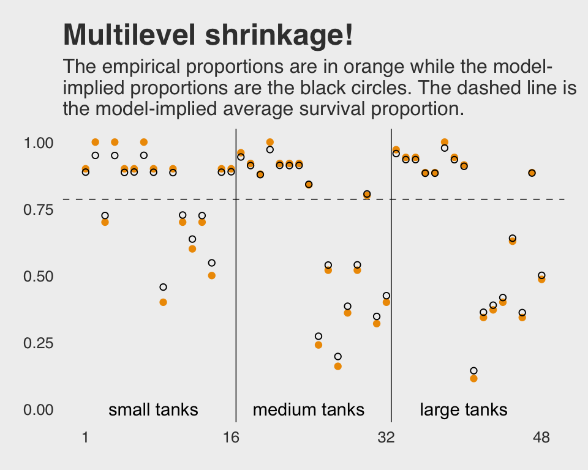
Here is our version of Figure 12.2.a.
tibble(x = c(-4, 5)) %>%
ggplot(aes(x = x)) +
mapply(function(mean, sd) {
stat_function(fun = dnorm,
args = list(mean = mean, sd = sd),
alpha = .2,
color = "orange2")
},
# Enter means and standard deviations here
mean = post[1:100, 1],
sd = post[1:100, 2]
) +
labs(title = "Population survival distribution",
subtitle = "The Gaussians are on the log-odds scale.") +
scale_y_continuous(NULL, breaks = NULL) +
coord_cartesian(xlim = c(-3, 4)) +
theme_fivethirtyeight() +
theme(plot.title = element_text(size = 13),
plot.subtitle = element_text(size = 10))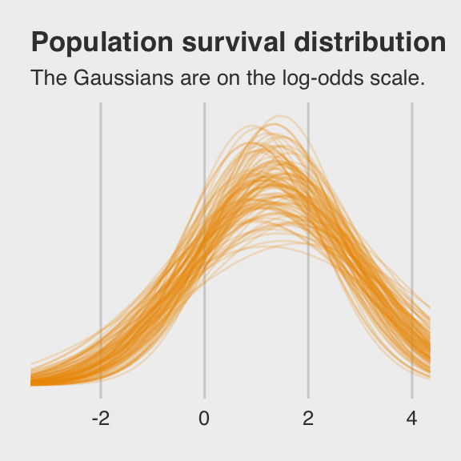
Note the uncertainty in terms of both location \(\alpha\) and scale \(\sigma\). Now here’s the code for Figure 12.2.b.
ggplot(data = post,
aes(x = rnorm(n = nrow(post),
mean = post[, 1],
sd = post[, 2]) %>%
inv_logit_scaled())) +
geom_density(size = 0, fill = "orange2") +
labs(title = "Probability of survival") +
scale_y_continuous(NULL, breaks = NULL) +
theme_fivethirtyeight()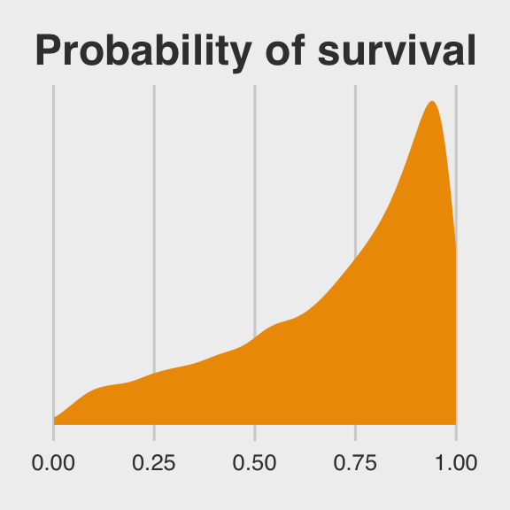
Note how we sampled 12,000 imaginary tanks rather than McElreath’s 8,000. This is because we had 12,000 HMC iterations (i.e., execute nrow(post)).
The aes() code, above, was a bit much. To get a sense of how it worked, consider this:
rnorm(n = 1,
mean = post[, 1],
sd = post[, 2]) %>%
inv_logit_scaled()## [1] 0.8743237First, we took one random draw from a normal distribution with a mean of the first row in post[, 1] and a standard deviation of the value from the first row in post[, 2], and passed it through the inv_logit_scaled() function. By replacing the 1 with nrow(post), we do this nrow(post) times (i.e., 12,000). So our orange density is the summary of that process.
12.1.0.1 Overthinking: Prior for variance components.
Yep, you can use the exponential distribution for your priors in brms. Here it is for model b12.2.
b12.2.e <-
update(b12.2,
prior = c(prior(normal(0, 1), class = Intercept),
prior(exponential(1), class = sd)))The model summary:
print(b12.2.e)## Family: binomial
## Links: mu = logit
## Formula: surv | trials(density) ~ 1 + (1 | tank)
## Data: d (Number of observations: 48)
## Samples: 4 chains, each with iter = 4000; warmup = 2000; thin = 1;
## total post-warmup samples = 8000
##
## Group-Level Effects:
## ~tank (Number of levels: 48)
## Estimate Est.Error l-95% CI u-95% CI Eff.Sample Rhat
## sd(Intercept) 1.61 0.21 1.24 2.07 2030 1.00
##
## Population-Level Effects:
## Estimate Est.Error l-95% CI u-95% CI Eff.Sample Rhat
## Intercept 1.30 0.25 0.81 1.78 1490 1.00
##
## Samples were drawn using sampling(NUTS). For each parameter, Eff.Sample
## is a crude measure of effective sample size, and Rhat is the potential
## scale reduction factor on split chains (at convergence, Rhat = 1).If you’re curious how the exponential prior compares to the posterior, you might just plot.
tibble(x = seq(from = 0, to = 6, by = .01)) %>%
ggplot(aes(x = x)) +
geom_ribbon(aes(ymin = 0, ymax = dexp(x, rate = 1)), # the prior
fill = "orange2", alpha = 1/3) +
geom_density(data = posterior_samples(b12.2.e), # the posterior
aes(x = sd_tank__Intercept),
fill = "orange2", size = 0) +
scale_y_continuous(NULL, breaks = NULL) +
coord_cartesian(xlim = c(0, 5)) +
labs(title = "Bonus prior/posterior plot\nfor sd_tank__Intercept",
subtitle = "The prior is the semitransparent ramp in the\nbackground. The posterior is the solid orange\nmound.") +
theme_fivethirtyeight()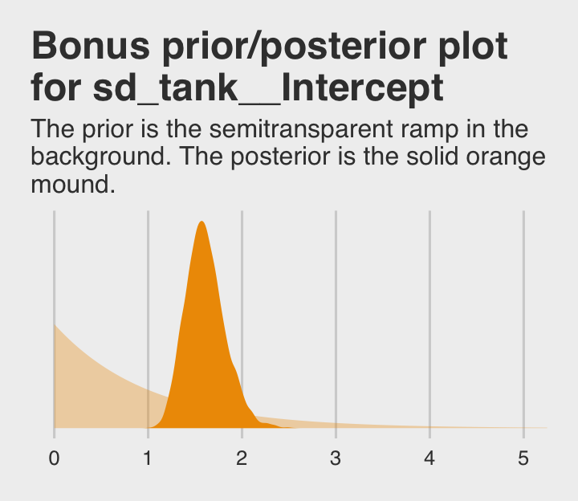
12.2 Varying effects and the underfitting/overfitting trade-off
Varying intercepts are just regularized estimates, but adaptively regularized by estimating how diverse the clusters are while estimating the features of each cluster. This fact is not easy to grasp…
A major benefit of using varying effects estimates, instead of the empirical raw estimates, is that they provide more accurate estimates of the individual cluster (tank) intercepts. On average, the varying effects actually provide a better estimate of the individual tank (cluster) means. The reason that the varying intercepts provides better estimates is that they do a better job trading off underfitting and overfitting. (p. 364)
In this section, we explicate this by contrasting three perspectives:
- Complete pooling (i.e., a single-\(\alpha\) model)
- No pooling (i.e., the single-level \(\alpha_{\text{tank}_i}\) model)
- Partial pooling (i.e., the multilevel model for which \(\alpha_{\text{tank}} \sim \text{Normal} (\alpha, \sigma)\))
To demonstrate [the magic of the multilevel model], we’ll simulate some tadpole data. That way, we’ll know the true per-pond survival probabilities. Then we can compare the no-pooling estimates to the partial pooling estimates, by computing how close each gets to the true values they are trying to estimate. The rest of this section shows how to do such a simulation. (p. 365)
12.2.1 The model.
The simulation formula should look familiar.
\[ \begin{eqnarray} \text{surv}_i & \sim & \text{Binomial} (n_i, p_i) \\ \text{logit} (p_i) & = & \alpha_{\text{pond}_i} \\ \alpha_{\text{pond}} & \sim & \text{Normal} (\alpha, \sigma) \\ \alpha & \sim & \text{Normal} (0, 1) \\ \sigma & \sim & \text{HalfCauchy} (0, 1) \end{eqnarray} \]
12.2.2 Assign values to the parameters.
a <- 1.4
sigma <- 1.5
n_ponds <- 60
set.seed(1222) # make results reproducible
(
dsim <-
tibble(pond = 1:n_ponds,
ni = rep(c(5, 10, 25, 35), each = n_ponds / 4) %>% as.integer(),
true_a = rnorm(n = n_ponds, mean = a, sd = sigma))
)## # A tibble: 60 x 3
## pond ni true_a
## <int> <int> <dbl>
## 1 1 5 1.95
## 2 2 5 0.249
## 3 3 5 0.521
## 4 4 5 1.20
## 5 5 5 -3.34
## 6 6 5 0.184
## 7 7 5 1.63
## 8 8 5 0.336
## 9 9 5 1.83
## 10 10 5 -0.865
## # ... with 50 more rows12.2.3 Sumulate survivors.
Each pond \(i\) has \(n_i\) potential survivors, and nature flips each tadpole’s coin, so to speak, with probability of survival \(p_i\). This probability \(p_i\) is implied by the model definition, and is equal to:
\[p_i = \frac{\text{exp} (\alpha_i)}{1 + \text{exp} (\alpha_i)}\]
The model uses a logit link, and so the probability is defined by the [
inv_logit_scaled()] function. (p. 367)
set.seed(1223)
(
dsim <-
dsim %>%
mutate(si = rbinom(n = n(), prob = inv_logit_scaled(true_a), size = ni))
)## # A tibble: 60 x 4
## pond ni true_a si
## <int> <int> <dbl> <int>
## 1 1 5 1.95 4
## 2 2 5 0.249 4
## 3 3 5 0.521 4
## 4 4 5 1.20 4
## 5 5 5 -3.34 0
## 6 6 5 0.184 2
## 7 7 5 1.63 5
## 8 8 5 0.336 2
## 9 9 5 1.83 4
## 10 10 5 -0.865 0
## # ... with 50 more rows12.2.4 Compute the no-pooling estimates.
The no-pooling estimates (i.e., \(\alpha_{\text{tank}_i}\)) are a function of simple algebra.
(
dsim <-
dsim %>%
mutate(p_nopool = si / ni)
)## # A tibble: 60 x 5
## pond ni true_a si p_nopool
## <int> <int> <dbl> <int> <dbl>
## 1 1 5 1.95 4 0.8
## 2 2 5 0.249 4 0.8
## 3 3 5 0.521 4 0.8
## 4 4 5 1.20 4 0.8
## 5 5 5 -3.34 0 0
## 6 6 5 0.184 2 0.4
## 7 7 5 1.63 5 1
## 8 8 5 0.336 2 0.4
## 9 9 5 1.83 4 0.8
## 10 10 5 -0.865 0 0
## # ... with 50 more rows“These are the same no-pooling estimates you’d get by fitting a model with a dummy variable for each pond and flat priors that induct no regularization” (p. 367).
12.2.5 Compute the partial-pooling estimates.
To follow along with McElreath, set chains = 1, cores = 1 to fit with one chain.
b12.3 <-
brm(data = dsim, family = binomial,
si | trials(ni) ~ 1 + (1 | pond),
prior = c(prior(normal(0, 1), class = Intercept),
prior(cauchy(0, 1), class = sd)),
iter = 10000, warmup = 1000, chains = 1, cores = 1)print(b12.3)## Family: binomial
## Links: mu = logit
## Formula: si | trials(ni) ~ 1 + (1 | pond)
## Data: dsim (Number of observations: 60)
## Samples: 1 chains, each with iter = 10000; warmup = 1000; thin = 1;
## total post-warmup samples = 9000
##
## Group-Level Effects:
## ~pond (Number of levels: 60)
## Estimate Est.Error l-95% CI u-95% CI Eff.Sample Rhat
## sd(Intercept) 1.43 0.23 1.04 1.93 3111 1.00
##
## Population-Level Effects:
## Estimate Est.Error l-95% CI u-95% CI Eff.Sample Rhat
## Intercept 1.54 0.22 1.13 1.98 3085 1.00
##
## Samples were drawn using sampling(NUTS). For each parameter, Eff.Sample
## is a crude measure of effective sample size, and Rhat is the potential
## scale reduction factor on split chains (at convergence, Rhat = 1).I’m not aware that you can use McElreath’s depth=2 trick in brms for summary() or print(). But can get that information with the coef() function.
coef(b12.3)$pond[c(1:2, 59:60), , ] %>%
round(digits = 2)## Estimate Est.Error Q2.5 Q97.5
## 1 1.58 0.92 -0.08 3.52
## 2 1.58 0.92 -0.08 3.55
## 59 2.68 0.63 1.58 4.05
## 60 0.99 0.38 0.27 1.76Note how we just peeked at the top and bottom two rows with the c(1:2, 59:60) part of the code, there. Somewhat discouragingly, coef() doesn’t return the ‘Eff.Sample’ or ‘Rhat’ columns as in McElreath’s output. We can still extract that information, though. For \(\hat{R}\), the solution is simple; use the brms::rhat() function.
rhat(b12.3)## b_Intercept sd_pond__Intercept r_pond[1,Intercept] r_pond[2,Intercept] r_pond[3,Intercept]
## 1.0000059 0.9998954 0.9998894 0.9998926 1.0000145
## r_pond[4,Intercept] r_pond[5,Intercept] r_pond[6,Intercept] r_pond[7,Intercept] r_pond[8,Intercept]
## 0.9998937 0.9998977 0.9998892 0.9999315 0.9999297
## r_pond[9,Intercept] r_pond[10,Intercept] r_pond[11,Intercept] r_pond[12,Intercept] r_pond[13,Intercept]
## 0.9999757 0.9999514 0.9999386 0.9999411 0.9998939
## r_pond[14,Intercept] r_pond[15,Intercept] r_pond[16,Intercept] r_pond[17,Intercept] r_pond[18,Intercept]
## 0.9999678 0.9999174 1.0000529 1.0000404 0.9999700
## r_pond[19,Intercept] r_pond[20,Intercept] r_pond[21,Intercept] r_pond[22,Intercept] r_pond[23,Intercept]
## 0.9998949 0.9998985 0.9998891 0.9998928 0.9999322
## r_pond[24,Intercept] r_pond[25,Intercept] r_pond[26,Intercept] r_pond[27,Intercept] r_pond[28,Intercept]
## 0.9999352 0.9999363 0.9998922 0.9998911 0.9999259
## r_pond[29,Intercept] r_pond[30,Intercept] r_pond[31,Intercept] r_pond[32,Intercept] r_pond[33,Intercept]
## 0.9999971 1.0000482 0.9998963 0.9999102 0.9998930
## r_pond[34,Intercept] r_pond[35,Intercept] r_pond[36,Intercept] r_pond[37,Intercept] r_pond[38,Intercept]
## 0.9999403 0.9998928 0.9999676 0.9999138 0.9998943
## r_pond[39,Intercept] r_pond[40,Intercept] r_pond[41,Intercept] r_pond[42,Intercept] r_pond[43,Intercept]
## 0.9999134 0.9999159 0.9999320 1.0000600 0.9999650
## r_pond[44,Intercept] r_pond[45,Intercept] r_pond[46,Intercept] r_pond[47,Intercept] r_pond[48,Intercept]
## 0.9999229 0.9998911 0.9998898 0.9998894 0.9999701
## r_pond[49,Intercept] r_pond[50,Intercept] r_pond[51,Intercept] r_pond[52,Intercept] r_pond[53,Intercept]
## 0.9999082 0.9998923 0.9999195 0.9998889 0.9998916
## r_pond[54,Intercept] r_pond[55,Intercept] r_pond[56,Intercept] r_pond[57,Intercept] r_pond[58,Intercept]
## 0.9998930 0.9998973 0.9999618 0.9999326 0.9998965
## r_pond[59,Intercept] r_pond[60,Intercept] lp__
## 0.9998951 0.9999115 0.9999012Extracting the ‘Eff.Sample’ values is a little more complicated. There is no effsamples() function. However, we do have neff_ratio().
neff_ratio(b12.3)## b_Intercept sd_pond__Intercept r_pond[1,Intercept] r_pond[2,Intercept] r_pond[3,Intercept]
## 0.3427542 0.3456433 1.0000000 1.0000000 1.0000000
## r_pond[4,Intercept] r_pond[5,Intercept] r_pond[6,Intercept] r_pond[7,Intercept] r_pond[8,Intercept]
## 1.0000000 1.0000000 1.0000000 1.0000000 1.0000000
## r_pond[9,Intercept] r_pond[10,Intercept] r_pond[11,Intercept] r_pond[12,Intercept] r_pond[13,Intercept]
## 1.0000000 1.0000000 1.0000000 1.0000000 1.0000000
## r_pond[14,Intercept] r_pond[15,Intercept] r_pond[16,Intercept] r_pond[17,Intercept] r_pond[18,Intercept]
## 1.0000000 1.0000000 1.0000000 1.0000000 1.0000000
## r_pond[19,Intercept] r_pond[20,Intercept] r_pond[21,Intercept] r_pond[22,Intercept] r_pond[23,Intercept]
## 1.0000000 1.0000000 1.0000000 1.0000000 1.0000000
## r_pond[24,Intercept] r_pond[25,Intercept] r_pond[26,Intercept] r_pond[27,Intercept] r_pond[28,Intercept]
## 1.0000000 1.0000000 1.0000000 1.0000000 1.0000000
## r_pond[29,Intercept] r_pond[30,Intercept] r_pond[31,Intercept] r_pond[32,Intercept] r_pond[33,Intercept]
## 1.0000000 1.0000000 1.0000000 1.0000000 1.0000000
## r_pond[34,Intercept] r_pond[35,Intercept] r_pond[36,Intercept] r_pond[37,Intercept] r_pond[38,Intercept]
## 1.0000000 1.0000000 1.0000000 1.0000000 1.0000000
## r_pond[39,Intercept] r_pond[40,Intercept] r_pond[41,Intercept] r_pond[42,Intercept] r_pond[43,Intercept]
## 1.0000000 1.0000000 1.0000000 1.0000000 1.0000000
## r_pond[44,Intercept] r_pond[45,Intercept] r_pond[46,Intercept] r_pond[47,Intercept] r_pond[48,Intercept]
## 1.0000000 1.0000000 1.0000000 1.0000000 1.0000000
## r_pond[49,Intercept] r_pond[50,Intercept] r_pond[51,Intercept] r_pond[52,Intercept] r_pond[53,Intercept]
## 1.0000000 1.0000000 1.0000000 1.0000000 1.0000000
## r_pond[54,Intercept] r_pond[55,Intercept] r_pond[56,Intercept] r_pond[57,Intercept] r_pond[58,Intercept]
## 1.0000000 1.0000000 1.0000000 1.0000000 1.0000000
## r_pond[59,Intercept] r_pond[60,Intercept] lp__
## 1.0000000 1.0000000 0.2037963The brms::neff_ratio() function returns ratios of the effective samples over the total number of post-warmup iterations. So if we know the neff_ratio() values and the number of post-warmup iterations, the ‘Eff.Sample’ values are just a little algebra away. A quick solution is to look at the ‘total post-warmup samples’ line at the top of our print() output. Another way is to extract that information from our brm() fit object. I’m not aware of a way to do that directly, but we can extract the iter value (i.e., b12.2$fit@sim$iter), the warmup value (i.e., b12.2$fit@sim$warmup), and the number of chains (i.e., b12.2$fit@sim$chains). With those values in hand, simple algebra will return the ‘total post-warmup samples’ value. E.g.,
(
n_iter <- (b12.3$fit@sim$iter - b12.3$fit@sim$warmup) * b12.3$fit@sim$chains
)## [1] 9000And now we have n_iter, we can calculate the ‘Eff.Sample’ values.
neff_ratio(b12.3) %>%
as.data.frame() %>%
rownames_to_column() %>%
rename(parameter = rowname,
neff_ratio = ".") %>%
mutate(eff_sample = (neff_ratio * n_iter) %>% round(digits = 0)) %>%
head()## parameter neff_ratio eff_sample
## 1 b_Intercept 0.3427542 3085
## 2 sd_pond__Intercept 0.3456433 3111
## 3 r_pond[1,Intercept] 1.0000000 9000
## 4 r_pond[2,Intercept] 1.0000000 9000
## 5 r_pond[3,Intercept] 1.0000000 9000
## 6 r_pond[4,Intercept] 1.0000000 9000Digressions aside, let’s get ready for the diagnostic plot of Figure 12.3.
dsim %>%
glimpse()## Observations: 60
## Variables: 5
## $ pond <int> 1, 2, 3, 4, 5, 6, 7, 8, 9, 10, 11, 12, 13, 14, 15, 16, 17, 18, 19, 20, 21, 22, 23, 24, 2...
## $ ni <int> 5, 5, 5, 5, 5, 5, 5, 5, 5, 5, 5, 5, 5, 5, 5, 10, 10, 10, 10, 10, 10, 10, 10, 10, 10, 10,...
## $ true_a <dbl> 1.9473216, 0.2487733, 0.5214389, 1.1987112, -3.3372853, 0.1843209, 1.6260145, 0.3359535,...
## $ si <int> 4, 4, 4, 4, 0, 2, 5, 2, 4, 0, 1, 5, 5, 5, 5, 10, 0, 5, 10, 10, 7, 10, 7, 6, 10, 9, 6, 10...
## $ p_nopool <dbl> 0.80, 0.80, 0.80, 0.80, 0.00, 0.40, 1.00, 0.40, 0.80, 0.00, 0.20, 1.00, 1.00, 1.00, 1.00...# we could have included this step in the block of code below, if we wanted to
p_partpool <-
coef(b12.3)$pond[, , ] %>%
as_tibble() %>%
transmute(p_partpool = inv_logit_scaled(Estimate))
dsim <-
dsim %>%
bind_cols(p_partpool) %>%
mutate(p_true = inv_logit_scaled(true_a)) %>%
mutate(nopool_error = abs(p_nopool - p_true),
partpool_error = abs(p_partpool - p_true))
dsim %>%
glimpse()## Observations: 60
## Variables: 9
## $ pond <int> 1, 2, 3, 4, 5, 6, 7, 8, 9, 10, 11, 12, 13, 14, 15, 16, 17, 18, 19, 20, 21, 22, 23,...
## $ ni <int> 5, 5, 5, 5, 5, 5, 5, 5, 5, 5, 5, 5, 5, 5, 5, 10, 10, 10, 10, 10, 10, 10, 10, 10, 1...
## $ true_a <dbl> 1.9473216, 0.2487733, 0.5214389, 1.1987112, -3.3372853, 0.1843209, 1.6260145, 0.33...
## $ si <int> 4, 4, 4, 4, 0, 2, 5, 2, 4, 0, 1, 5, 5, 5, 5, 10, 0, 5, 10, 10, 7, 10, 7, 6, 10, 9,...
## $ p_nopool <dbl> 0.80, 0.80, 0.80, 0.80, 0.00, 0.40, 1.00, 0.40, 0.80, 0.00, 0.20, 1.00, 1.00, 1.00...
## $ p_partpool <dbl> 0.8294316, 0.8285394, 0.8288654, 0.8293981, 0.2394738, 0.5428037, 0.9304361, 0.542...
## $ p_true <dbl> 0.8751543, 0.5618746, 0.6274842, 0.7682954, 0.0343140, 0.5459502, 0.8356229, 0.583...
## $ nopool_error <dbl> 0.075154292, 0.238125444, 0.172515824, 0.031704565, 0.034314001, 0.145950213, 0.16...
## $ partpool_error <dbl> 0.045722683, 0.266664853, 0.201381248, 0.061102621, 0.205159786, 0.003146557, 0.09...Here is our code for Figure 12.3. The extra data processing for dfline is how we get the values necessary for the horizontal summary lines.
dfline <-
dsim %>%
select(ni, nopool_error:partpool_error) %>%
gather(key, value, -ni) %>%
group_by(key, ni) %>%
summarise(mean_error = mean(value)) %>%
mutate(x = c( 1, 16, 31, 46),
xend = c(15, 30, 45, 60))
dsim %>%
ggplot(aes(x = pond)) +
geom_vline(xintercept = c(15.5, 30.5, 45.4),
color = "white", size = 2/3) +
geom_point(aes(y = nopool_error), color = "orange2") +
geom_point(aes(y = partpool_error), shape = 1) +
geom_segment(data = dfline,
aes(x = x, xend = xend,
y = mean_error, yend = mean_error),
color = rep(c("orange2", "black"), each = 4),
linetype = rep(1:2, each = 4)) +
labs(y = "absolute error",
title = "Estimate error by model type",
subtitle = "The horizontal axis displays pond number. The vertical axis measures\nthe absolute error in the predicted proportion of survivors, compared to\nthe true value used in the simulation. The higher the point, the worse\nthe estimate. No-pooling shown in orange. Partial pooling shown in black.\nThe orange and dashed black lines show the average error for each kind\nof estimate, across each initial density of tadpoles (pond size). Smaller\nponds produce more error, but the partial pooling estimates are better\non average, especially in smaller ponds.") +
scale_x_continuous(breaks = c(1, 10, 20, 30, 40, 50, 60)) +
annotate("text", x = c(15 - 7.5, 30 - 7.5, 45 - 7.5, 60 - 7.5), y = .45,
label = c("tiny (5)", "small (10)", "medium (25)", "large (35)")) +
theme_fivethirtyeight() +
theme(panel.grid = element_blank(),
plot.subtitle = element_text(size = 10))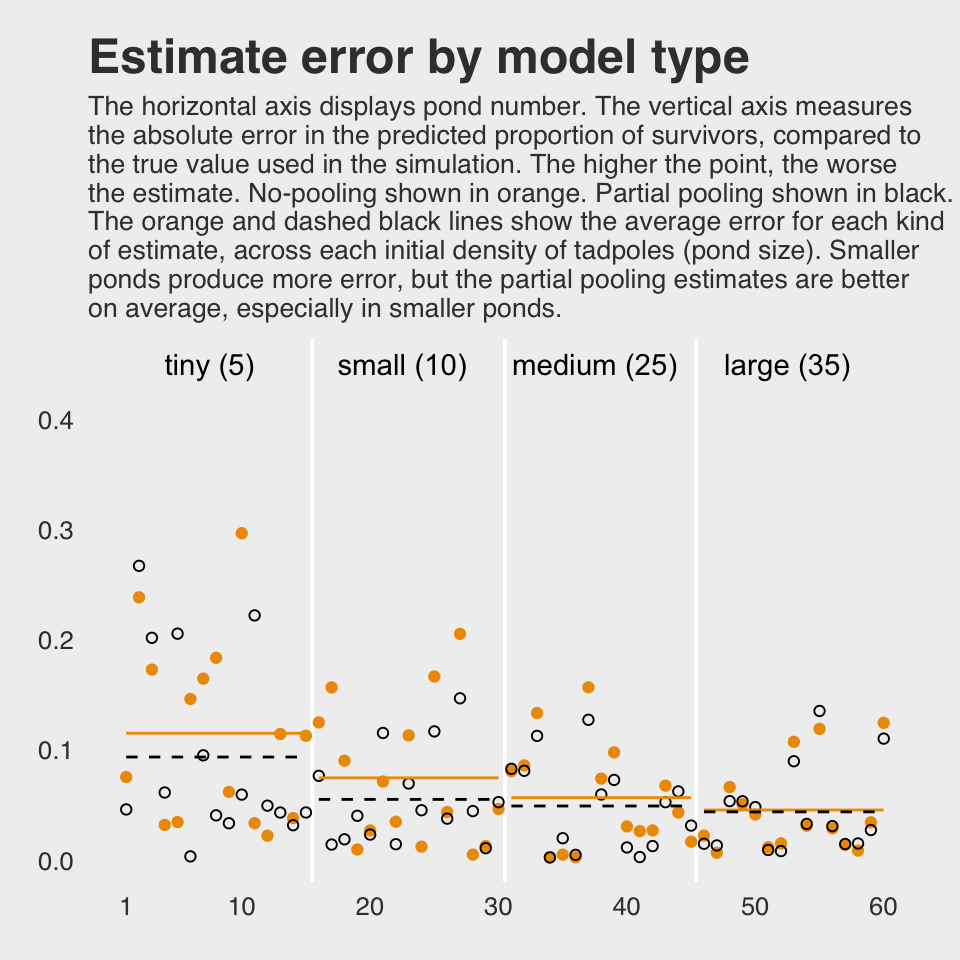
If you wanted to quantify the difference in simple summaries, you might do something like this:
dsim %>%
select(ni, nopool_error:partpool_error) %>%
gather(key, value, -ni) %>%
group_by(key) %>%
summarise(mean_error = mean(value) %>% round(digits = 3),
median_error = median(value) %>% round(digits = 3))## # A tibble: 2 x 3
## key mean_error median_error
## <chr> <dbl> <dbl>
## 1 nopool_error 0.073 0.045
## 2 partpool_error 0.06 0.045I originally learned about the multilevel model within the context of longitudinal data. In that context, I found the basic principles of a multilevel structure quite intuitive. The concept of partial pooling, however, took me some time to wrap my head around. If you’re struggling with this, be patient and keep chipping away.
When McElreath was lecturing on this topic in 2015, he traced partial pooling to statistician James Stein. In 1977, Efron and Morris wrote the now classic paper, Stein’s Paradox in Statistics, which did a nice job breaking down why partial pooling can be so powerful. One of the primary examples they used in the paper was of 1970 batting average data. If you’d like more practice seeing how partial pooling works–or if you just like baseball–, check out my project on that example, James-Stein and Bayesian partial pooling.
12.2.5.1 Overthinking: Repeating the pond simulation.
Within the brms workflow, we reuse a compiled model with update(). But first, we’ll simulate new data.
a <- 1.4
sigma <- 1.5
n_ponds <- 60
set.seed(12.251) # for new data, set a new seed
new_dsim <-
tibble(pond = 1:n_ponds,
ni = rep(c(5, 10, 25, 35), each = n_ponds / 4) %>% as.integer(),
true_a = rnorm(n = n_ponds, mean = a, sd = sigma)) %>%
mutate(si = rbinom(n = n(), prob = inv_logit_scaled(true_a), size = ni)) %>%
mutate(p_nopool = si / ni)
glimpse(new_dsim)## Observations: 60
## Variables: 5
## $ pond <int> 1, 2, 3, 4, 5, 6, 7, 8, 9, 10, 11, 12, 13, 14, 15, 16, 17, 18, 19, 20, 21, 22, 23, 24, 2...
## $ ni <int> 5, 5, 5, 5, 5, 5, 5, 5, 5, 5, 5, 5, 5, 5, 5, 10, 10, 10, 10, 10, 10, 10, 10, 10, 10, 10,...
## $ true_a <dbl> -0.82085139, 3.76575421, -0.03511672, 0.01999213, -1.59646315, 0.99155593, 0.92697693, 0...
## $ si <int> 2, 5, 4, 1, 2, 3, 3, 3, 3, 4, 2, 1, 1, 5, 5, 4, 9, 8, 8, 7, 9, 10, 9, 6, 4, 7, 8, 7, 9, ...
## $ p_nopool <dbl> 0.40, 1.00, 0.80, 0.20, 0.40, 0.60, 0.60, 0.60, 0.60, 0.80, 0.40, 0.20, 0.20, 1.00, 1.00...Fit the new model.
b12.3_new <-
update(b12.3,
newdata = new_dsim,
iter = 10000, warmup = 1000, chains = 1, cores = 1)print(b12.3_new)## Family: binomial
## Links: mu = logit
## Formula: si | trials(ni) ~ 1 + (1 | pond)
## Data: new_dsim (Number of observations: 60)
## Samples: 1 chains, each with iter = 10000; warmup = 1000; thin = 1;
## total post-warmup samples = 9000
##
## Group-Level Effects:
## ~pond (Number of levels: 60)
## Estimate Est.Error l-95% CI u-95% CI Eff.Sample Rhat
## sd(Intercept) 1.16 0.16 0.89 1.50 3274 1.00
##
## Population-Level Effects:
## Estimate Est.Error l-95% CI u-95% CI Eff.Sample Rhat
## Intercept 1.14 0.18 0.80 1.49 4647 1.00
##
## Samples were drawn using sampling(NUTS). For each parameter, Eff.Sample
## is a crude measure of effective sample size, and Rhat is the potential
## scale reduction factor on split chains (at convergence, Rhat = 1).Why not plot the first simulation versus the second one?
posterior_samples(b12.3) %>%
bind_rows(posterior_samples(b12.3_new)) %>%
mutate(model = rep(c("b12.3", "b12.3_new"), each = n()/2)) %>%
ggplot(aes(x = b_Intercept, y = sd_pond__Intercept)) +
stat_density_2d(geom = "raster",
aes(fill = stat(density)),
contour = F) +
geom_vline(xintercept = a, color = "orange3", linetype = 3) +
geom_hline(yintercept = sigma, color = "orange3", linetype = 3) +
scale_fill_gradient(low = "grey25", high = "orange3") +
ggtitle("Our simulation posteriors contrast a bit",
subtitle = expression(paste(alpha, " is on the x and ", sigma, " is on the y, both in log-odds. The dotted lines intersect at the true values."))) +
coord_cartesian(xlim = c(.7, 2),
ylim = c(.8, 1.9)) +
theme_fivethirtyeight() +
theme(legend.position = "none",
panel.grid = element_blank()) +
facet_wrap(~model, ncol = 2)
If you’d like the stanfit portion of your brm() object, subset with $fit. Take b12.3, for example. You might check out its structure via b12.3$fit %>% str(). Here’s the actual Stan code.
b12.3$fit@ stanmodel## S4 class stanmodel '0e126f378ddfd8d0780d3e099c4e7266' coded as follows:
## // generated with brms 2.5.0
## functions {
## }
## data {
## int<lower=1> N; // total number of observations
## int Y[N]; // response variable
## int trials[N]; // number of trials
## // data for group-level effects of ID 1
## int<lower=1> J_1[N];
## int<lower=1> N_1;
## int<lower=1> M_1;
## vector[N] Z_1_1;
## int prior_only; // should the likelihood be ignored?
## }
## transformed data {
## }
## parameters {
## real temp_Intercept; // temporary intercept
## vector<lower=0>[M_1] sd_1; // group-level standard deviations
## vector[N_1] z_1[M_1]; // unscaled group-level effects
## }
## transformed parameters {
## // group-level effects
## vector[N_1] r_1_1 = sd_1[1] * (z_1[1]);
## }
## model {
## vector[N] mu = temp_Intercept + rep_vector(0, N);
## for (n in 1:N) {
## mu[n] += r_1_1[J_1[n]] * Z_1_1[n];
## }
## // priors including all constants
## target += normal_lpdf(temp_Intercept | 0, 1);
## target += cauchy_lpdf(sd_1 | 0, 1)
## - 1 * cauchy_lccdf(0 | 0, 1);
## target += normal_lpdf(z_1[1] | 0, 1);
## // likelihood including all constants
## if (!prior_only) {
## target += binomial_logit_lpmf(Y | trials, mu);
## }
## }
## generated quantities {
## // actual population-level intercept
## real b_Intercept = temp_Intercept;
## }
## And you can get the data of a given brm() fit object like so.
b12.3$data %>%
head()## si ni pond
## 1 4 5 1
## 2 4 5 2
## 3 4 5 3
## 4 4 5 4
## 5 0 5 5
## 6 2 5 612.3 More than one type of cluster
“We can use and often should use more than one type of cluster in the same model” (p. 370).
12.3.1 Multilevel chimpanzees.
The initial multilevel update from model b10.4 from the last chapter follows the statistical formula
\[ \begin{eqnarray} \text{left_pull}_i & \sim & \text{Binomial} (n_i = 1, p_i) \\ \text{logit} (p_i) & = & \alpha + \alpha_{\text{actor}_i} + (\beta_1 + \beta_2 \text{condition}_i) \text{prosoc_left}_i \\ \alpha_{\text{actor}} & \sim & \text{Normal} (0, \sigma_{\text{actor}}) \\ \alpha & \sim & \text{Normal} (0, 10) \\ \beta_1 & \sim & \text{Normal} (0, 10) \\ \beta_2 & \sim & \text{Normal} (0, 10) \\ \sigma_{\text{actor}} & \sim & \text{HalfCauchy} (0, 1) \end{eqnarray} \]
Notice that \(\alpha\) is inside the linear model, not inside the Gaussian prior for \(\alpha_\text{actor}\). This is mathematically equivalent to what [we] did with the tadpoles earlier in the chapter. You can always take the mean out of a Gaussian distribution and treat that distribution as a constant plus a Gaussian distribution centered on zero.
This might seem a little weird at first, so it might help train your intuition by experimenting in R. (p. 371)
Behold our two identical Gaussians in a tidy tibble.
set.seed(241)
two_gaussians <-
tibble(y1 = rnorm(n = 1e4, mean = 10, sd = 1),
y2 = 10 + rnorm(n = 1e4, mean = 0, sd = 1))Let’s follow McElreath’s advice to make sure they are same by superimposing the density of one on the other.
two_gaussians %>%
ggplot() +
geom_density(aes(x = y1),
size = 0, fill = "orange1", alpha = 1/3) +
geom_density(aes(x = y2),
size = 0, fill = "orange4", alpha = 1/3) +
scale_y_continuous(NULL, breaks = NULL) +
labs(title = "Our simulated Gaussians") +
theme_fivethirtyeight()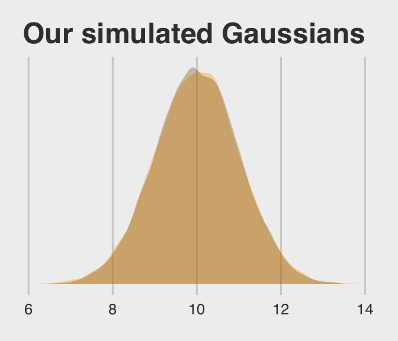
Yep, those Gaussians look about the same.
Let’s get the chimpanzees data from rethinking.
library(rethinking)
data(chimpanzees)
d <- chimpanzeesDetach rethinking and reload brms.
rm(chimpanzees)
detach(package:rethinking, unload = T)
library(brms)For our brms model with varying intercepts for actor but not block, we employ the pulled_left ~ 1 + ... + (1 | actor) syntax, specifically omitting a (1 | block) section.
b12.4 <-
brm(data = d, family = binomial,
pulled_left ~ 1 + prosoc_left + prosoc_left:condition + (1 | actor),
prior = c(prior(normal(0, 10), class = Intercept),
prior(normal(0, 10), class = b),
prior(cauchy(0, 1), class = sd)),
iter = 5000, warmup = 1000, chains = 4, cores = 4, # I'm using 4 cores, instead of the `cores=3` in McElreath's code
control = list(adapt_delta = 0.95))The initial solutions came with a few divergent transitions. Increasing adapt_delta to 0.95 solved the problem. You can also solve the problem with more strongly regularizing priors such as normal(0, 2) on the intercept and slope parameters (see recommendations from the Stan team). Consider trying both methods and comparing the results. They’re similar.
Here we add the actor-level deviations to the fixed intercept, the grand mean.
post <- posterior_samples(b12.4)
post %>%
select(`r_actor[1,Intercept]`:`r_actor[7,Intercept]`) %>%
gather() %>%
# This is how we add the grand mean to the actor-level deviations
mutate(value = value + post$b_Intercept) %>%
group_by(key) %>%
summarise(mean = mean(value) %>% round(digits = 2))## # A tibble: 7 x 2
## key mean
## <chr> <dbl>
## 1 r_actor[1,Intercept] -0.71
## 2 r_actor[2,Intercept] 4.6
## 3 r_actor[3,Intercept] -1.02
## 4 r_actor[4,Intercept] -1.02
## 5 r_actor[5,Intercept] -0.71
## 6 r_actor[6,Intercept] 0.23
## 7 r_actor[7,Intercept] 1.76Here’s another way to get at the same information, this time using coef() and a little formatting help from the stringr::str_c() function. Just for kicks, we’ll throw in the 95% intervals, too.
coef(b12.4)$actor[ , c(1, 3:4), 1] %>%
as_tibble() %>%
round(digits = 2) %>%
# Here we put the credible intervals in an APA-6-style format
mutate(`95% CIs` = str_c("[", Q2.5, ", ", Q97.5, "]")) %>%
mutate(actor = str_c("chimp #", 1:7)) %>%
rename(mean = Estimate) %>%
select(actor, mean, `95% CIs`) %>%
knitr::kable()| actor | mean | 95% CIs |
|---|---|---|
| chimp #1 | -0.71 | [-1.24, -0.18] |
| chimp #2 | 4.60 | [2.57, 8.54] |
| chimp #3 | -1.02 | [-1.57, -0.48] |
| chimp #4 | -1.02 | [-1.59, -0.48] |
| chimp #5 | -0.71 | [-1.24, -0.19] |
| chimp #6 | 0.23 | [-0.3, 0.77] |
| chimp #7 | 1.76 | [1.06, 2.55] |
If you prefer the posterior median to the mean, just add a robust = T argument inside the coef() function.
12.3.2 Two types of cluster.
The full statistical model follows the form
\[\begin{eqnarray} \text{left_pull}_i & \sim & \text{Binomial} (n_i = 1, p_i) \\ \text{logit} (p_i) & = & \alpha + \alpha_{\text{actor}_i} + \alpha_{\text{block}_i} + (\beta_1 + \beta_2 \text{condition}_i) \text{prosoc_left}_i \\ \alpha_{\text{actor}} & \sim & \text{Normal} (0, \sigma_{\text{actor}}) \\ \alpha_{\text{block}} & \sim & \text{Normal} (0, \sigma_{\text{actor}}) \\ \alpha & \sim & \text{Normal} (0, 10) \\ \beta_1 & \sim & \text{Normal} (0, 10) \\ \beta_2 & \sim & \text{Normal} (0, 10) \\ \sigma_{\text{actor}} & \sim & \text{HalfCauchy} (0, 1) \\ \sigma_{\text{block}} & \sim & \text{HalfCauchy} (0, 1) \end{eqnarray}\]
Our brms model with varying intercepts for both actor and block now employs the ... (1 | actor) + (1 | block) syntax.
b12.5 <-
update(b12.4,
newdata = d,
formula = pulled_left ~ 1 + prosoc_left + prosoc_left:condition + (1 | actor) + (1 | block),
iter = 6000, warmup = 1000, cores = 4, chains = 4,
control = list(adapt_delta = 0.99))This time we increased adapt_delta to 0.99 to avoid divergent transitions. We can look at the primary coefficients with print(). McElreath encouraged us to inspect the trace plots. Here they are.
library(bayesplot)
color_scheme_set("orange")
post <- posterior_samples(b12.5, add_chain = T)
post %>%
select(-lp__, -iter) %>%
mcmc_trace(facet_args = list(ncol = 4)) +
scale_x_continuous(breaks = c(0, 2500, 5000)) +
theme_fivethirtyeight() +
theme(legend.position = c(.75, .06))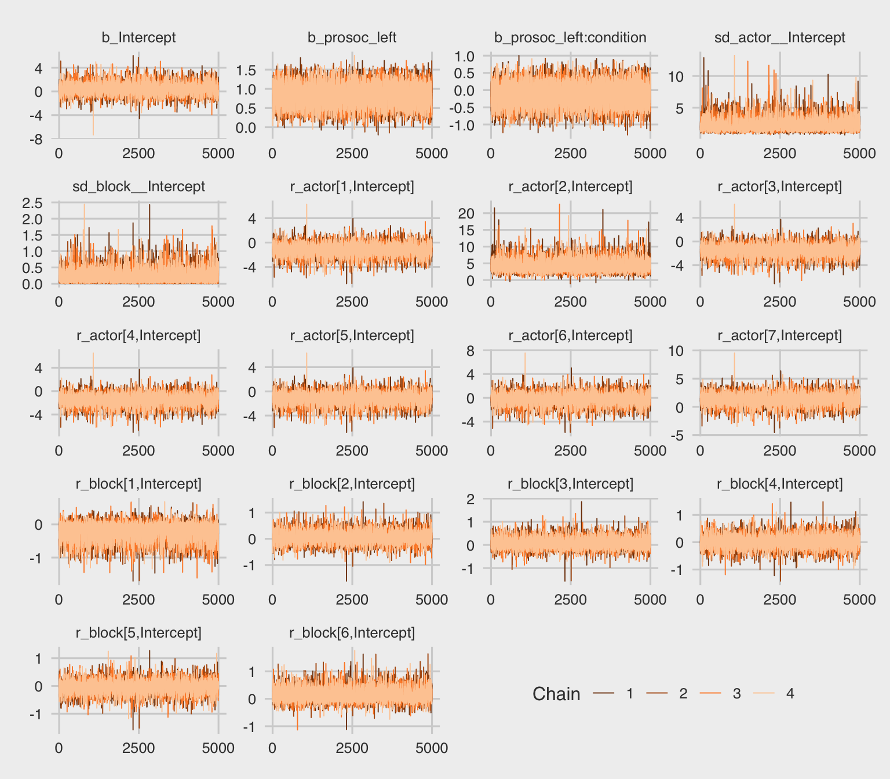
The trace plots look great. We may as well examine the \(n_\text{eff} / N\) ratios, too.
neff_ratio(b12.5) %>%
mcmc_neff() +
theme_fivethirtyeight()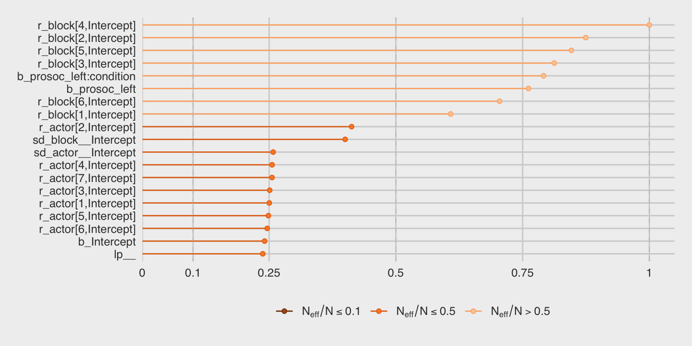
About half of them are lower than we might like, but none are in the embarrassing \(n_\text{eff} / N \leq .1\) range. Let’s look at the summary of the main parameters.
print(b12.5)## Family: binomial
## Links: mu = logit
## Formula: pulled_left ~ prosoc_left + (1 | actor) + (1 | block) + prosoc_left:condition
## Data: d (Number of observations: 504)
## Samples: 4 chains, each with iter = 6000; warmup = 1000; thin = 1;
## total post-warmup samples = 20000
##
## Group-Level Effects:
## ~actor (Number of levels: 7)
## Estimate Est.Error l-95% CI u-95% CI Eff.Sample Rhat
## sd(Intercept) 2.27 0.93 1.13 4.58 5159 1.00
##
## ~block (Number of levels: 6)
## Estimate Est.Error l-95% CI u-95% CI Eff.Sample Rhat
## sd(Intercept) 0.22 0.18 0.01 0.67 7999 1.00
##
## Population-Level Effects:
## Estimate Est.Error l-95% CI u-95% CI Eff.Sample Rhat
## Intercept 0.43 0.93 -1.34 2.43 4822 1.00
## prosoc_left 0.83 0.26 0.31 1.34 15231 1.00
## prosoc_left:condition -0.13 0.30 -0.72 0.46 15826 1.00
##
## Samples were drawn using sampling(NUTS). For each parameter, Eff.Sample
## is a crude measure of effective sample size, and Rhat is the potential
## scale reduction factor on split chains (at convergence, Rhat = 1).This time, we’ll need to use brms::ranef() to get those depth=2-type estimates in the same metric displayed in the text. With ranef(), you get the group-specific estimates in a deviance metric. The coef() function, in contrast, yields the group-specific estimates in what you might call the natural metric. We’ll get more language for this in the next chapter.
ranef(b12.5)$actor[, , "Intercept"] %>%
round(digits = 2)## Estimate Est.Error Q2.5 Q97.5
## 1 -1.15 0.94 -3.15 0.63
## 2 4.19 1.64 1.80 8.14
## 3 -1.46 0.94 -3.48 0.33
## 4 -1.46 0.94 -3.48 0.32
## 5 -1.15 0.94 -3.18 0.64
## 6 -0.20 0.94 -2.19 1.59
## 7 1.34 0.97 -0.71 3.22ranef(b12.5)$block[, , "Intercept"] %>%
round(digits = 2)## Estimate Est.Error Q2.5 Q97.5
## 1 -0.17 0.23 -0.74 0.13
## 2 0.04 0.19 -0.32 0.47
## 3 0.05 0.19 -0.29 0.49
## 4 0.01 0.18 -0.37 0.41
## 5 -0.03 0.18 -0.44 0.34
## 6 0.11 0.21 -0.20 0.62We might make the coefficient plot of Figure 12.4.a like this:
stanplot(b12.5, pars = c("^r_", "^b_", "^sd_")) +
theme_fivethirtyeight() +
theme(axis.text.y = element_text(hjust = 0))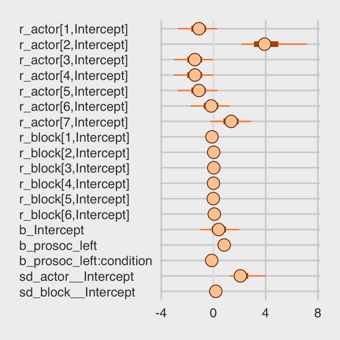
Once we get the posterior samples, it’s easy to compare the random variances as in Figure 12.4.b.
post %>%
ggplot(aes(x = sd_actor__Intercept)) +
theme_fivethirtyeight() +
geom_density(size = 0, fill = "orange1", alpha = 3/4) +
geom_density(aes(x = sd_block__Intercept),
size = 0, fill = "orange4", alpha = 3/4) +
scale_y_continuous(NULL, breaks = NULL) +
coord_cartesian(xlim = c(0, 4)) +
labs(title = expression(sigma)) +
annotate("text", x = 2/3, y = 2, label = "block", color = "orange4") +
annotate("text", x = 2, y = 3/4, label = "actor", color = "orange1")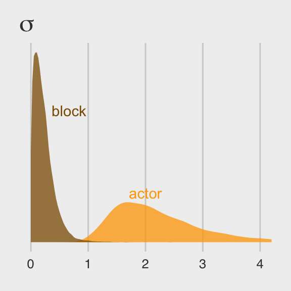
We might compare our models by their PSIS-LOO values.
l.b12.4 <- loo(b12.4, cores = 4)
l.b12.5 <- loo(b12.5, cores = 4)
compare_ic(l.b12.4, l.b12.5)## LOOIC SE
## b12.4 531.61 19.50
## b12.5 532.75 19.68
## b12.4 - b12.5 -1.14 1.72And you can get the LOO version of the p_waic, the p_loo, like so.
l.b12.4$ estimates## Estimate SE
## elpd_loo -265.806641 9.7518758
## p_loo 8.236901 0.4396798
## looic 531.613283 19.5037517l.b12.5$ estimates## Estimate SE
## elpd_loo -266.37486 9.8389698
## p_loo 10.39833 0.5325361
## looic 532.74972 19.6779396And if you peek at the structure of the loo objects, you’ll see you can call the p_loo values directly with something like l.b12.5$ estimates["p_loo", 1]. The results are quite similar to those in the text.
Anyways, the two models yield nearly-equivalent information criteria values. Yet recall what McElreath wrote: “There is nothing to gain here by selecting either model. The comparison of the two models tells a richer story” (p. 367).
12.4 Multilevel posterior predictions
… producing implied predictions from a fit model, is very helpful for understanding what the model means. Every model is a merger of sense and nonsense. When we understand a model, we can find its sense and control its nonsense. But as models get more complex, it is very difficult to impossible to understand them just by inspecting tables of posterior means and intervals. Exploring implied posterior predictions helps much more…
… The introduction of varying effects does introduce nuance, however.
First, we should no longer expect the model to exactly retrodict the sample, because adaptive regularization has as its goal to trade off poorer fit in sample for better inference and hopefully better fit out of sample. This is what shrinkage does for us…
Second, “prediction” in the context of a multilevel model requires additional choices. If we wish to validate a model against the specific clusters used to fit the model, that is one thing. But if we instead wish to compute predictions for new clusters, other than the one observed in the sample, that is quite another. We’ll consider each of these in turn, continuing to use the chimpanzees model from the previous section. (p. 376)
12.4.1 Posterior prediction for same clusters.
Like McElreath did in the text, we’ll do this two ways. Recall we use brms::fitted() in place of rethinking::link().
chimp <- 2
nd <-
tibble(prosoc_left = c(0, 1, 0, 1),
condition = c(0, 0, 1, 1),
actor = chimp)
(
chimp_2_fitted <-
fitted(b12.4,
newdata = nd) %>%
as_tibble() %>%
mutate(condition = factor(c("0/0", "1/0", "0/1", "1/1"),
levels = c("0/0", "1/0", "0/1", "1/1")))
)## # A tibble: 4 x 5
## Estimate Est.Error Q2.5 Q97.5 condition
## <dbl> <dbl> <dbl> <dbl> <fct>
## 1 0.981 0.0195 0.929 1.000 0/0
## 2 0.991 0.00949 0.965 1.000 1/0
## 3 0.981 0.0195 0.929 1.000 0/1
## 4 0.990 0.0107 0.961 1.000 1/1(
chimp_2_d <-
d %>%
filter(actor == chimp) %>%
group_by(prosoc_left, condition) %>%
summarise(prob = mean(pulled_left)) %>%
ungroup() %>%
mutate(condition = str_c(prosoc_left, "/", condition)) %>%
mutate(condition = factor(condition, levels = c("0/0", "1/0", "0/1", "1/1")))
)## # A tibble: 4 x 3
## prosoc_left condition prob
## <int> <fct> <dbl>
## 1 0 0/0 1
## 2 0 0/1 1
## 3 1 1/0 1
## 4 1 1/1 1McElreath didn’t show the corresponding plot in the text. It might look like this.
chimp_2_fitted %>%
# if you want to use `geom_line()` or `geom_ribbon()` with a factor on the x axis,
# you need to code something like `group = 1` in `aes()`
ggplot(aes(x = condition, y = Estimate, group = 1)) +
geom_ribbon(aes(ymin = Q2.5, ymax = Q97.5), fill = "orange1") +
geom_line(color = "blue") +
geom_point(data = chimp_2_d,
aes(x = condition, y = prob),
color = "grey25") +
ggtitle("Chimp #2",
subtitle = "The posterior mean and 95%\nintervals are the blue line\nand orange band, respectively.\nThe empirical means are\nthe charcoal dots.") +
coord_cartesian(ylim = c(.75, 1)) +
theme_fivethirtyeight() +
theme(plot.subtitle = element_text(size = 10))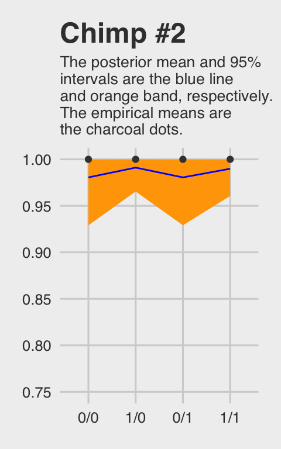
Do note how severely we’ve restricted the y-axis range. But okay, now let’s do things by hand. We’ll need to extract the posterior samples and look at the structure of the data.
post <- posterior_samples(b12.4)
glimpse(post)## Observations: 16,000
## Variables: 12
## $ b_Intercept <dbl> 2.84660836, 3.31678210, 0.92818980, 0.97523659, 1.06284714, -1.57315237...
## $ b_prosoc_left <dbl> 0.8027592, 0.6465404, 1.0693015, 1.0108346, 1.0995699, 0.5916456, 0.628...
## $ `b_prosoc_left:condition` <dbl> -0.304525935, -0.366690285, -0.183819656, -0.367542935, -0.434902624, 0...
## $ sd_actor__Intercept <dbl> 3.947720, 3.301699, 4.001243, 3.917649, 3.835672, 2.342017, 1.791982, 2...
## $ `r_actor[1,Intercept]` <dbl> -3.9548165, -3.7774344, -1.7728771, -1.7907886, -1.8501038, 0.9077583, ...
## $ `r_actor[2,Intercept]` <dbl> 6.114119, 4.679728, 2.563180, 3.707954, 2.191760, 5.983084, 6.056797, 6...
## $ `r_actor[3,Intercept]` <dbl> -4.0365853, -3.9685120, -2.1543374, -1.9182331, -2.1817965, 0.7542737, ...
## $ `r_actor[4,Intercept]` <dbl> -3.86370546, -4.37117423, -2.05761046, -2.29637822, -2.19367525, 0.7843...
## $ `r_actor[5,Intercept]` <dbl> -3.40039529, -3.90678422, -1.71947109, -1.79589150, -1.87454021, 0.9572...
## $ `r_actor[6,Intercept]` <dbl> -2.6719766, -2.8518619, -0.8761091, -0.5816997, -0.9458346, 1.5937625, ...
## $ `r_actor[7,Intercept]` <dbl> -0.988928592, -1.515283707, 1.451833859, 0.271678419, 1.194536366, 3.22...
## $ lp__ <dbl> -280.3395, -281.0325, -278.8489, -278.2605, -278.8375, -280.8820, -283....McElreath didn’t show what his R code 12.29 dens( post$a_actor[,5] ) would look like. But here’s our analogue.
post %>%
transmute(actor_5 =`r_actor[5,Intercept]`) %>%
ggplot(aes(x = actor_5)) +
geom_density(size = 0, fill = "blue") +
scale_y_continuous(breaks = NULL) +
ggtitle("Chimp #5's density") +
theme_fivethirtyeight()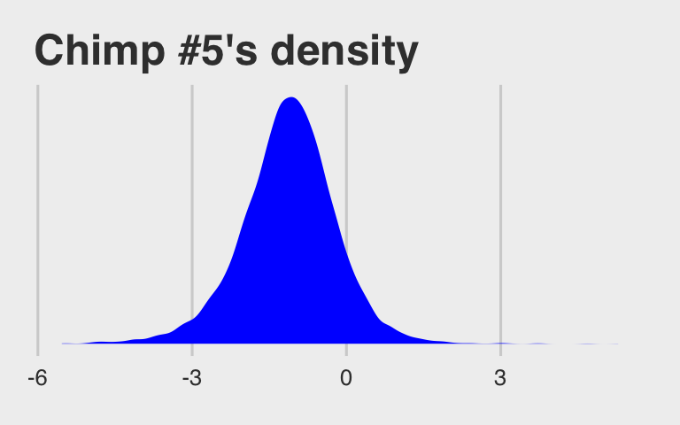
McElreath built his own link() function. Here we’ll build an alternative to fitted().
# our hand-made `brms::fitted()` alternative
my_fitted <- function(prosoc_left, condition){
post %>%
transmute(fitted = (b_Intercept +
`r_actor[5,Intercept]` +
b_prosoc_left * prosoc_left +
`b_prosoc_left:condition` * prosoc_left * condition) %>%
inv_logit_scaled())
}
# the posterior summaries
(
chimp_5_my_fitted <-
tibble(prosoc_left = c(0, 1, 0, 1),
condition = c(0, 0, 1, 1)) %>%
mutate(post = map2(prosoc_left, condition, my_fitted)) %>%
unnest() %>%
mutate(condition = str_c(prosoc_left, "/", condition)) %>%
mutate(condition = factor(condition, levels = c("0/0", "1/0", "0/1", "1/1"))) %>%
group_by(condition) %>%
tidybayes::mean_qi(fitted)
)## # A tibble: 4 x 7
## condition fitted .lower .upper .width .point .interval
## <fct> <dbl> <dbl> <dbl> <dbl> <chr> <chr>
## 1 0/0 0.332 0.224 0.452 0.95 mean qi
## 2 1/0 0.527 0.382 0.670 0.95 mean qi
## 3 0/1 0.332 0.224 0.452 0.95 mean qi
## 4 1/1 0.495 0.351 0.637 0.95 mean qi# the empirical summaries
chimp <- 5
(
chimp_5_d <-
d %>%
filter(actor == chimp) %>%
group_by(prosoc_left, condition) %>%
summarise(prob = mean(pulled_left)) %>%
ungroup() %>%
mutate(condition = str_c(prosoc_left, "/", condition)) %>%
mutate(condition = factor(condition, levels = c("0/0", "1/0", "0/1", "1/1")))
)## # A tibble: 4 x 3
## prosoc_left condition prob
## <int> <fct> <dbl>
## 1 0 0/0 0.333
## 2 0 0/1 0.278
## 3 1 1/0 0.556
## 4 1 1/1 0.5Okay, let’s see how good we are at retrodicting the pulled_left probabilities for actor == 5.
chimp_5_my_fitted %>%
ggplot(aes(x = condition, y = fitted, group = 1)) +
geom_ribbon(aes(ymin = .lower, ymax = .upper), fill = "orange1") +
geom_line(color = "blue") +
geom_point(data = chimp_5_d,
aes(x = condition, y = prob),
color = "grey25") +
ggtitle("Chimp #5",
subtitle = "This plot is like the last except\nwe did more by hand.") +
coord_cartesian(ylim = 0:1) +
theme_fivethirtyeight() +
theme(plot.subtitle = element_text(size = 10))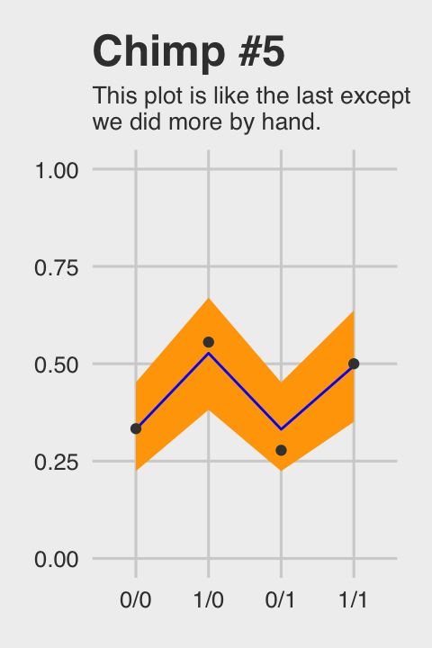
Not bad.
12.4.2 Posterior prediction for new clusters.
By average actor, McElreath referred to a chimp with an intercept exactly at the population mean \(\alpha\). So this time we’ll only be working with the population parameters or what are also sometimes called the fixed effects. When you work with brms::posterior_samples() output, this would mean working with columns beginning with the b_ prefix (i.e., b_Intercept, b_prosoc_left, and b_prosoc_left:condition).
post_average_actor <-
post %>%
# here we use the linear regression formula to get the log_odds for the 4 conditions
transmute(`0/0` = b_Intercept,
`1/0` = b_Intercept + b_prosoc_left,
`0/1` = b_Intercept,
`1/1` = b_Intercept + b_prosoc_left + `b_prosoc_left:condition`) %>%
# with `mutate_all()` we can convert the estimates to probabilities in one fell swoop
mutate_all(inv_logit_scaled) %>%
# putting the data in the long format and grouping by condition (i.e., `key`)
gather() %>%
mutate(key = factor(key, level = c("0/0", "1/0", "0/1", "1/1"))) %>%
group_by(key) %>%
# here we get the summary values for the plot
summarise(m = mean(value),
# note we're using 80% intervals
ll = quantile(value, probs = .1),
ul = quantile(value, probs = .9))
post_average_actor## # A tibble: 4 x 4
## key m ll ul
## <fct> <dbl> <dbl> <dbl>
## 1 0/0 0.587 0.344 0.822
## 2 1/0 0.744 0.539 0.914
## 3 0/1 0.587 0.344 0.822
## 4 1/1 0.721 0.506 0.903Figure 12.5.a.
p1 <-
post_average_actor %>%
ggplot(aes(x = key, y = m, group = 1)) +
geom_ribbon(aes(ymin = ll, ymax = ul), fill = "orange1") +
geom_line(color = "blue") +
ggtitle("Average actor") +
coord_cartesian(ylim = 0:1) +
theme_fivethirtyeight() +
theme(plot.title = element_text(size = 14, hjust = .5))
p1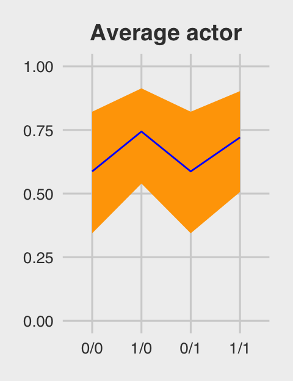
If we want to depict the variability across the chimps, we need to include sd_actor__Intercept into the calculations. In the first block of code, below, we simulate a bundle of new intercepts defined by
\[\alpha_\text{actor} \sim \text{Normal} (0, \sigma_\text{actor})\]
# the random effects
set.seed(12.42)
ran_ef <-
tibble(random_effect = rnorm(n = 1000, mean = 0, sd = post$sd_actor__Intercept)) %>%
# with the `., ., ., .` syntax, we quadruple the previous line
bind_rows(., ., ., .)
# the fixed effects (i.e., the population parameters)
fix_ef <-
post %>%
slice(1:1000) %>%
transmute(`0/0` = b_Intercept,
`1/0` = b_Intercept + b_prosoc_left,
`0/1` = b_Intercept,
`1/1` = b_Intercept + b_prosoc_left + `b_prosoc_left:condition`) %>%
gather() %>%
rename(condition = key,
fixed_effect = value) %>%
mutate(condition = factor(condition, level = c("0/0", "1/0", "0/1", "1/1")))
# combine them
ran_and_fix_ef <-
bind_cols(ran_ef, fix_ef) %>%
mutate(intercept = fixed_effect + random_effect) %>%
mutate(prob = inv_logit_scaled(intercept))
# to simplify things, we'll reduce them to summaries
(
marginal_effects <-
ran_and_fix_ef %>%
group_by(condition) %>%
summarise(m = mean(prob),
ll = quantile(prob, probs = .1),
ul = quantile(prob, probs = .9))
)## # A tibble: 4 x 4
## condition m ll ul
## <fct> <dbl> <dbl> <dbl>
## 1 0/0 0.552 0.0772 0.970
## 2 1/0 0.661 0.159 0.986
## 3 0/1 0.552 0.0772 0.970
## 4 1/1 0.647 0.142 0.984Behold Figure 12.5.b.
p2 <-
marginal_effects %>%
ggplot(aes(x = condition, y = m, group = 1)) +
geom_ribbon(aes(ymin = ll, ymax = ul), fill = "orange1") +
geom_line(color = "blue") +
ggtitle("Marginal of actor") +
coord_cartesian(ylim = 0:1) +
theme_fivethirtyeight() +
theme(plot.title = element_text(size = 14, hjust = .5))
p2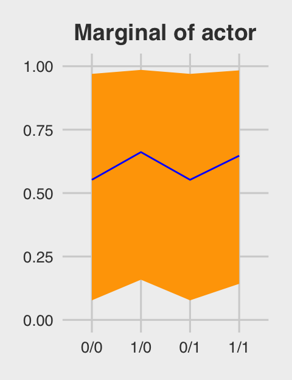
Figure 12.5.c just takes a tiny bit more wrangling.
p3 <-
ran_and_fix_ef %>%
mutate(iter = rep(1:1000, times = 4)) %>%
filter(iter %in% c(1:50)) %>%
ggplot(aes(x = condition, y = prob, group = iter)) +
theme_fivethirtyeight() +
geom_line(alpha = 1/2, color = "orange3") +
ggtitle("50 simulated actors") +
coord_cartesian(ylim = 0:1) +
theme(plot.title = element_text(size = 14, hjust = .5))
p3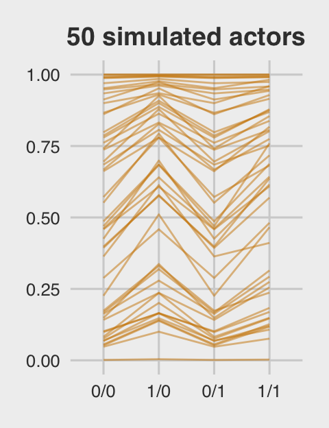
For the finale, we’ll stitch the three plots together.
library(gridExtra)
grid.arrange(p1, p2, p3, ncol = 3)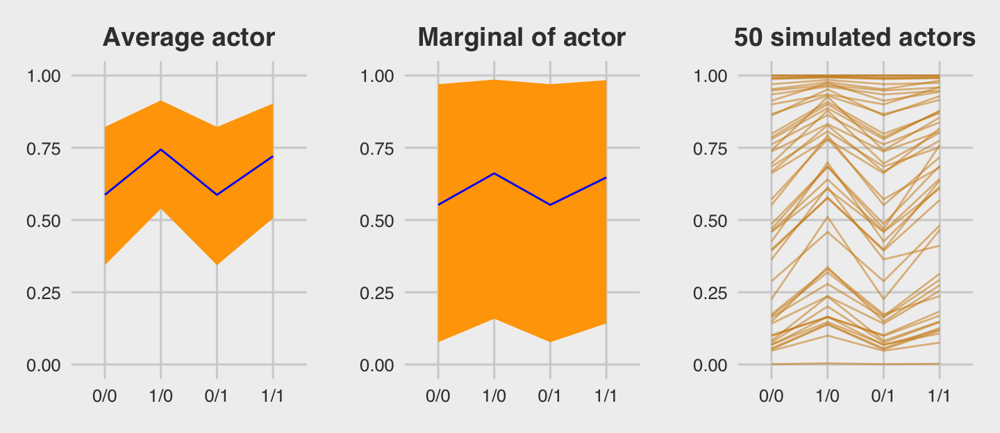
12.4.2.1 Bonus: Let’s use fitted() this time.
We just made those plots using various wrangled versions of post, the data frame returned by posterior_samples(b.12.4). If you followed along closely, part of what made that a great exercise is that it forced you to consider what the various vectors in post meant with respect to the model formula. But it’s also handy to see how to do that from a different perspective. So in this section, we’ll repeat that process by relying on the fitted() function, instead. We’ll go in the same order, starting with the average actor.
nd <-
tibble(prosoc_left = c(0, 1, 0, 1),
condition = c(0, 0, 1, 1))
(
fitd_b12.4 <-
fitted(b12.4,
newdata = nd,
re_formula = NA,
probs = c(.1, .9)) %>%
as_tibble() %>%
bind_cols(nd) %>%
mutate(condition = str_c(prosoc_left, "/", condition) %>%
factor(., levels = c("0/0", "1/0", "0/1", "1/1")))
)## # A tibble: 4 x 6
## Estimate Est.Error Q10 Q90 prosoc_left condition
## <dbl> <dbl> <dbl> <dbl> <dbl> <fct>
## 1 0.587 0.182 0.344 0.822 0 0/0
## 2 0.744 0.152 0.539 0.914 1 1/0
## 3 0.587 0.182 0.344 0.822 0 0/1
## 4 0.721 0.159 0.506 0.903 1 1/1You should notice a few things. Since b12.4 is a multilevel model, it had three predictors: prosoc_left, condition, and actor. However, our nd data only included the first two of those predictors. The reason fitted() permitted that was because we set re_formula = NA. When you do that, you tell fitted() to ignore group-level effects (i.e., focus only on the fixed effects). This was our fitted() version of ignoring the r_ vectors returned by posterior_samples(). Here’s the plot.
p4 <-
fitd_b12.4 %>%
ggplot(aes(x = condition, y = Estimate, group = 1)) +
geom_ribbon(aes(ymin = Q10, ymax = Q90), fill = "blue") +
geom_line(color = "orange1") +
ggtitle("Average actor") +
coord_cartesian(ylim = 0:1) +
theme_fivethirtyeight() +
theme(plot.title = element_text(size = 14, hjust = .5))
p4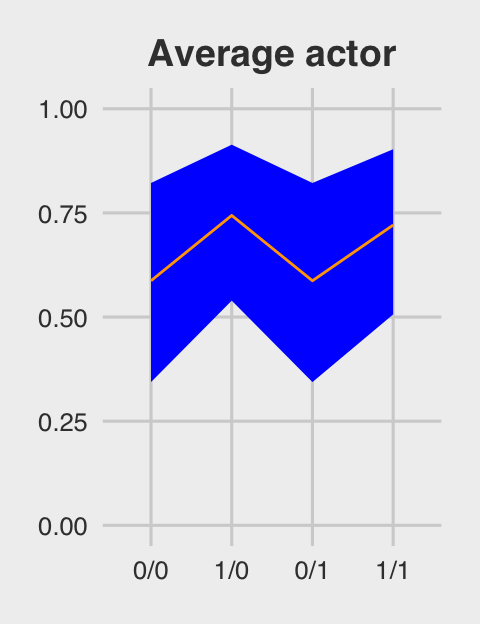
For marginal of actor, we can continue using the same nd data. This time we’ll be sticking with the default re_formula setting, which will accommodate the multilevel nature of the model. However, we’ll also be adding allow_new_levels = T and sample_new_levels = "gaussian". The former will allow us to marginalize across the specific actors in our data and the latter will instruct fitted() to use the multivariate normal distribution implied by the random effects. It’ll make more sense why I say multivariate normal by the end of the next chapter. For now, just go with it.
(
fitd_b12.4 <-
fitted(b12.4,
newdata = nd,
probs = c(.1, .9),
allow_new_levels = T,
sample_new_levels = "gaussian") %>%
as_tibble() %>%
bind_cols(nd) %>%
mutate(condition = str_c(prosoc_left, "/", condition) %>%
factor(., levels = c("0/0", "1/0", "0/1", "1/1")))
)## # A tibble: 4 x 6
## Estimate Est.Error Q10 Q90 prosoc_left condition
## <dbl> <dbl> <dbl> <dbl> <dbl> <fct>
## 1 0.556 0.330 0.0679 0.970 0 0/0
## 2 0.665 0.312 0.144 0.987 1 1/0
## 3 0.556 0.330 0.0679 0.970 0 0/1
## 4 0.648 0.316 0.124 0.985 1 1/1Here’s our fitted()-based marginal of actor plot.
p5 <-
fitd_b12.4 %>%
ggplot(aes(x = condition, y = Estimate, group = 1)) +
geom_ribbon(aes(ymin = Q10, ymax = Q90), fill = "blue") +
geom_line(color = "orange1") +
ggtitle("Marginal of actor") +
coord_cartesian(ylim = 0:1) +
theme_fivethirtyeight() +
theme(plot.title = element_text(size = 14, hjust = .5))
p5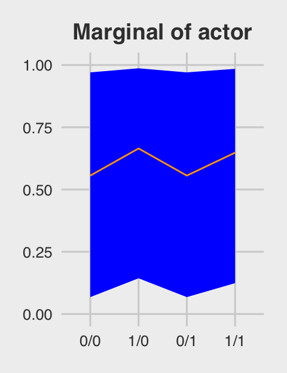
For the simulated actors plot, we’ll just amend our process from the last one. This time we’re setting summary = F, in order to keep the iteration-specific results, and setting nsamples = n_sim. n_sim is just a name for the number of actors we’d like to simulate (i.e., 50, as in the text).
# how many simulated actors would you like?
n_sim <- 50
(
fitd_b12.4 <-
fitted(b12.4,
newdata = nd,
probs = c(.1, .9),
allow_new_levels = T,
sample_new_levels = "gaussian",
summary = F,
nsamples = n_sim) %>%
as_tibble() %>%
mutate(iter = 1:n_sim) %>%
gather(key, value, -iter) %>%
bind_cols(nd %>%
transmute(condition = str_c(prosoc_left, "/", condition) %>%
factor(., levels = c("0/0", "1/0", "0/1", "1/1"))) %>%
expand(condition, iter = 1:n_sim))
)## # A tibble: 200 x 5
## iter key value condition iter1
## <int> <chr> <dbl> <fct> <int>
## 1 1 V1 0.00971 0/0 1
## 2 2 V1 0.498 0/0 2
## 3 3 V1 0.670 0/0 3
## 4 4 V1 0.615 0/0 4
## 5 5 V1 0.896 0/0 5
## 6 6 V1 0.436 0/0 6
## 7 7 V1 0.220 0/0 7
## 8 8 V1 0.510 0/0 8
## 9 9 V1 0.945 0/0 9
## 10 10 V1 0.326 0/0 10
## # ... with 190 more rowsp6 <-
fitd_b12.4 %>%
ggplot(aes(x = condition, y = value, group = iter)) +
theme_fivethirtyeight() +
geom_line(alpha = 1/2, color = "blue") +
ggtitle("50 simulated actors") +
coord_cartesian(ylim = 0:1) +
theme(plot.title = element_text(size = 14, hjust = .5))
p6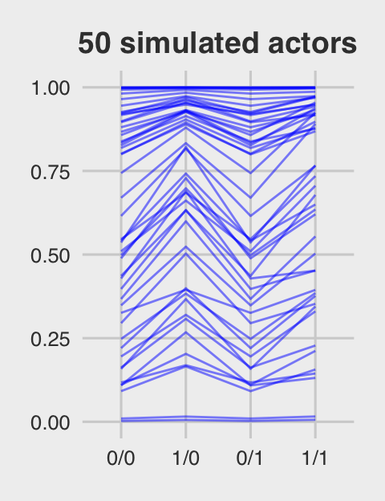
Here they are altogether.
grid.arrange(p4, p5, p6, ncol = 3)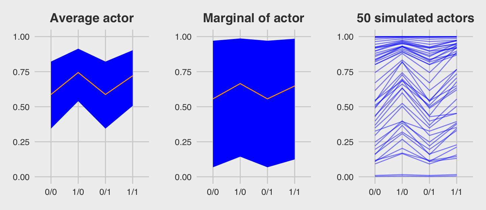
12.4.3 Focus and multilevel prediction.
First, let’s load the Kline data.
# prep data
library(rethinking)
data(Kline)
d <- KlineSwitch out the packages, once again.
detach(package:rethinking, unload = T)
library(brms)
rm(Kline)The statistical formula for our multilevel count model is
\[ \begin{eqnarray} \text{total_tools}_i & \sim & \text{Poisson} (\mu_i) \\ \text{log} (\mu_i) & = & \alpha + \alpha_{\text{culture}_i} + \beta \text{log} (\text{population}_i) \\ \alpha & \sim & \text{Normal} (0, 10) \\ \beta & \sim & \text{Normal} (0, 1) \\ \alpha_{\text{culture}} & \sim & \text{Normal} (0, \sigma_{\text{culture}}) \\ \sigma_{\text{culture}} & \sim & \text{HalfCauchy} (0, 1) \\ \end{eqnarray} \]
With brms, we don’t actually need to make the logpop or society variables. We’re ready to fit the multilevel Kline model with the data in hand.
b12.6 <-
brm(data = d, family = poisson,
total_tools ~ 0 + intercept + log(population) +
(1 | culture),
prior = c(prior(normal(0, 10), class = b, coef = intercept),
prior(normal(0, 1), class = b),
prior(cauchy(0, 1), class = sd)),
iter = 4000, warmup = 1000, cores = 3, chains = 3)Note how we used the special 0 + intercept syntax rather than using the default Intercept. This is because our predictor variable was not mean centered. For more info, see here. Though we used the 0 + intercept syntax for the fixed effect, it was not necessary for the random effect. Both ways work.
Here is the data-processing work for our variant of Figure 12.6.
nd <-
tibble(population = seq(from = 1000, to = 400000, by = 5000),
# To "simulate counterfactual societies, using the hyper-parameters" (p. 383),
# we'll plug a new island into the `culture` variable
culture = "my_island")
pred_12.6 <-
predict(b12.6,
# This allows us to simulate values for our counterfactual island, "my_island"
allow_new_levels = T,
# Here we explicitly tell brms we want to include the group-level effects
re_formula = ~ (1 | culture),
# From the brms manual, this uses the "(multivariate) normal distribution implied by
# the group-level standard deviations and correlations", which appears to be
# what McElreath did in the text.
sample_new_levels = "gaussian",
newdata = nd,
probs = c(.015, .055, .165, .835, .945, .985)) %>%
as_tibble() %>%
bind_cols(nd)
pred_12.6 %>%
glimpse()## Observations: 80
## Variables: 10
## $ Estimate <dbl> 19.69167, 31.10667, 36.57911, 40.37367, 43.45178, 45.96167, 48.30811, 50.49456, 52.206...
## $ Est.Error <dbl> 9.576842, 14.402249, 17.682183, 20.466952, 22.705786, 24.992111, 27.111403, 29.735646,...
## $ Q1.5 <dbl> 5.000, 10.000, 13.000, 14.000, 15.000, 16.000, 17.000, 18.000, 18.000, 19.000, 19.000,...
## $ Q5.5 <dbl> 8, 15, 18, 20, 21, 23, 23, 25, 26, 26, 27, 27, 28, 29, 29, 29, 30, 30, 30, 31, 31, 32,...
## $ Q16.5 <dbl> 11, 20, 24, 26, 28, 30, 31, 33, 34, 35, 35, 36, 37, 38, 39, 39, 40, 40, 41, 41, 42, 43...
## $ Q83.5 <dbl> 27.000, 41.000, 48.000, 53.000, 57.000, 60.000, 63.000, 66.000, 68.000, 70.000, 72.000...
## $ Q94.5 <dbl> 35.000, 53.000, 62.000, 68.000, 73.000, 77.055, 81.055, 86.000, 88.000, 91.000, 95.000...
## $ Q98.5 <dbl> 47.000, 70.000, 80.000, 91.000, 96.000, 104.015, 110.000, 116.000, 122.015, 127.015, 1...
## $ population <dbl> 1000, 6000, 11000, 16000, 21000, 26000, 31000, 36000, 41000, 46000, 51000, 56000, 6100...
## $ culture <chr> "my_island", "my_island", "my_island", "my_island", "my_island", "my_island", "my_isla...For a detailed discussion on this way of using brms::predict(), see Andrew MacDonald’s great blogpost on this very figure. Here’s what we’ve been working for:
pred_12.6 %>%
ggplot(aes(x = log(population), y = Estimate)) +
geom_ribbon(aes(ymin = Q1.5, ymax = Q98.5), fill = "orange2", alpha = 1/3) +
geom_ribbon(aes(ymin = Q5.5, ymax = Q94.5), fill = "orange2", alpha = 1/3) +
geom_ribbon(aes(ymin = Q16.5, ymax = Q83.5), fill = "orange2", alpha = 1/3) +
coord_cartesian(ylim = range(d$total_tools)) +
geom_line(color = "orange4") +
geom_text(data = d, aes(y = total_tools, label = culture),
size = 2.33, color = "blue") +
ggtitle("Total tools as a function of log(population)") +
theme_fivethirtyeight() +
theme(plot.title = element_text(size = 12, hjust = .5))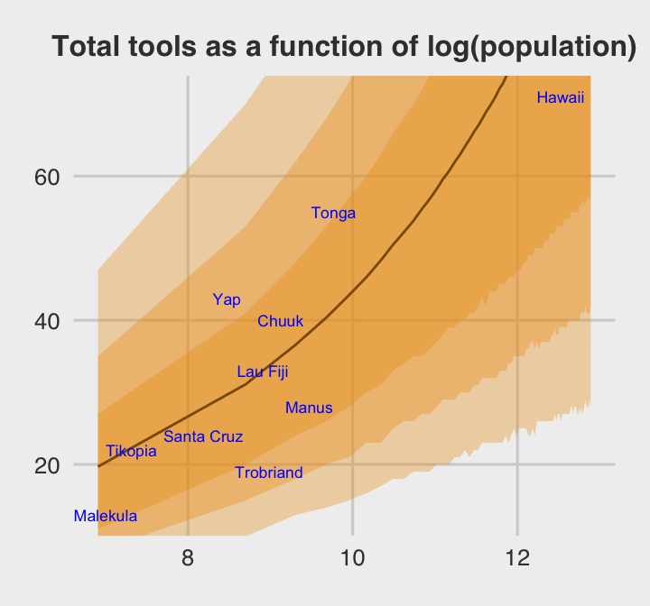
Glorious.
The envelope of predictions is a lot wider here than it was back in Chapter 10. This is a consequene of the varying intercepts, combined with the fact that there is much more variation in the data than a pure-Poisson model anticipates. (p. 384)
Session info
sessionInfo()## R version 3.5.1 (2018-07-02)
## Platform: x86_64-apple-darwin15.6.0 (64-bit)
## Running under: macOS High Sierra 10.13.6
##
## Matrix products: default
## BLAS: /System/Library/Frameworks/Accelerate.framework/Versions/A/Frameworks/vecLib.framework/Versions/A/libBLAS.dylib
## LAPACK: /Library/Frameworks/R.framework/Versions/3.5/Resources/lib/libRlapack.dylib
##
## locale:
## [1] en_US.UTF-8/en_US.UTF-8/en_US.UTF-8/C/en_US.UTF-8/en_US.UTF-8
##
## attached base packages:
## [1] grid parallel stats graphics grDevices utils datasets methods base
##
## other attached packages:
## [1] gridExtra_2.3 bayesplot_1.6.0 ggthemes_3.5.0 forcats_0.3.0 stringr_1.3.1
## [6] dplyr_0.7.6 purrr_0.2.5 readr_1.1.1 tidyr_0.8.1 tibble_1.4.2
## [11] tidyverse_1.2.1 brms_2.5.0 Rcpp_0.12.18 rstan_2.17.3 StanHeaders_2.17.2
## [16] ggplot2_3.0.0
##
## loaded via a namespace (and not attached):
## [1] pacman_0.4.6 utf8_1.1.4 ggstance_0.3 tidyselect_0.2.4
## [5] htmlwidgets_1.2 munsell_0.5.0 codetools_0.2-15 nleqslv_3.3.2
## [9] DT_0.4 miniUI_0.1.1.1 withr_2.1.2 Brobdingnag_1.2-5
## [13] colorspace_1.3-2 highr_0.7 knitr_1.20 rstudioapi_0.7
## [17] stats4_3.5.1 Rttf2pt1_1.3.7 labeling_0.3 mnormt_1.5-5
## [21] bridgesampling_0.4-0 rprojroot_1.3-2 coda_0.19-1 xfun_0.3
## [25] R6_2.2.2 markdown_0.8 HDInterval_0.2.0 reshape_0.8.7
## [29] assertthat_0.2.0 promises_1.0.1 scales_0.5.0 beeswarm_0.2.3
## [33] gtable_0.2.0 rlang_0.2.1 extrafontdb_1.0 lazyeval_0.2.1
## [37] broom_0.4.5 inline_0.3.15 yaml_2.1.19 reshape2_1.4.3
## [41] abind_1.4-5 modelr_0.1.2 threejs_0.3.1 crosstalk_1.0.0
## [45] backports_1.1.2 httpuv_1.4.4.2 rsconnect_0.8.8 extrafont_0.17
## [49] tools_3.5.1 bookdown_0.7 psych_1.8.4 RColorBrewer_1.1-2
## [53] ggridges_0.5.0 plyr_1.8.4 base64enc_0.1-3 progress_1.2.0
## [57] prettyunits_1.0.2 zoo_1.8-2 LaplacesDemon_16.1.1 haven_1.1.2
## [61] magrittr_1.5 colourpicker_1.0 mvtnorm_1.0-8 tidybayes_1.0.1
## [65] matrixStats_0.54.0 hms_0.4.2 shinyjs_1.0 mime_0.5
## [69] evaluate_0.10.1 arrayhelpers_1.0-20160527 xtable_1.8-2 shinystan_2.5.0
## [73] readxl_1.1.0 rstantools_1.5.0 compiler_3.5.1 maps_3.3.0
## [77] crayon_1.3.4 htmltools_0.3.6 later_0.7.3 lubridate_1.7.4
## [81] MASS_7.3-50 Matrix_1.2-14 cli_1.0.0 bindr_0.1.1
## [85] igraph_1.2.1 pkgconfig_2.0.1 foreign_0.8-70 xml2_1.2.0
## [89] svUnit_0.7-12 dygraphs_1.1.1.5 vipor_0.4.5 rvest_0.3.2
## [93] digest_0.6.15 rmarkdown_1.10 cellranger_1.1.0 shiny_1.1.0
## [97] gtools_3.8.1 nlme_3.1-137 jsonlite_1.5 bindrcpp_0.2.2
## [101] mapproj_1.2.6 viridisLite_0.3.0 pillar_1.2.3 lattice_0.20-35
## [105] loo_2.0.0 httr_1.3.1 glue_1.2.0 xts_0.10-2
## [109] shinythemes_1.1.1 pander_0.6.2 stringi_1.2.3